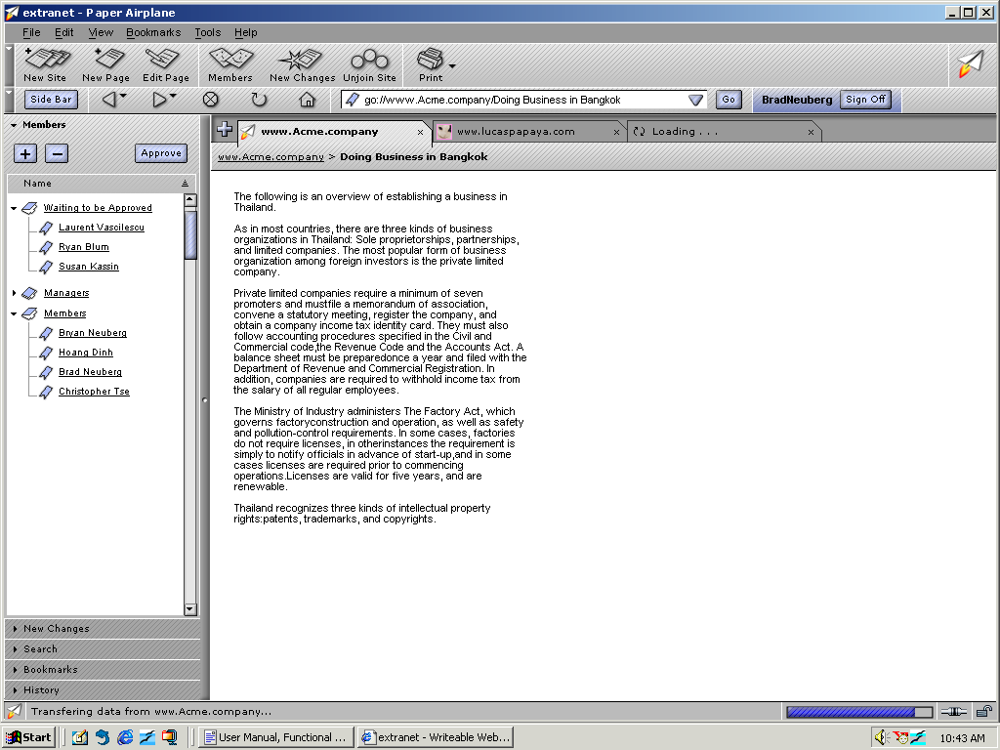
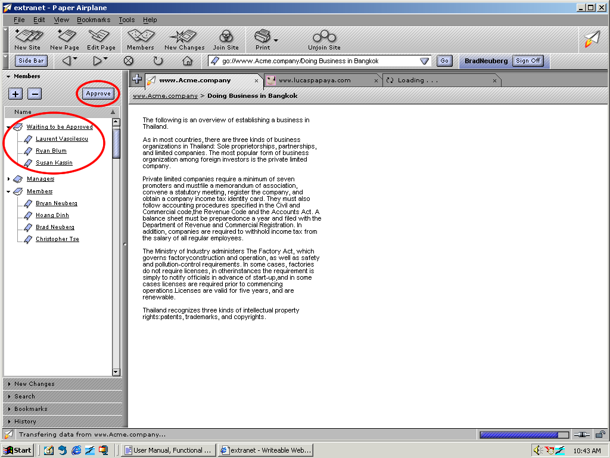
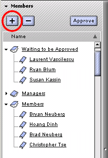
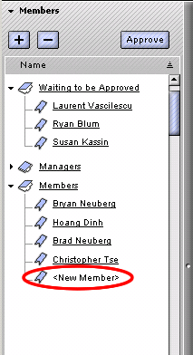

| | |
Table of Contents | Last | Next
Walkthrough - Seamless Collaboration
Choose Who and How People Can Change Your Site
Paper Airplane includes a very powerful and intuitive access control system. Three roles are available for your site's members: Managers, Members, and Non-Members.
The most powerful role are the Managers. Managers authorize new members and remove old members, edit and delete pages created by anyone, and can set anyone's role; basicly they are authorizers and deleters of content. Next come the Members. Members are still powerful, but have some restrictions. They can create and rename pages but can't delete pages. They can also edit any page.
Non-Members are the final and least-powerful role. They can simply view content, if the site itself is public. They are simply the viewers; they can look through the glass window at the candy-store but can't get in.
Moving members between roles is easy. First, press the Members button:

The Members Button
This will show the Members panel in the Sidebar:

The Members Panel in the Sidebar
To transform a Member into a Manager, for example, simply drag the desired username from the Member's category to the Manager's category. Only Managers can perform these roles changes. Managers can also force Members to become Non-Members by selecting their names in the Membership Sidebar and pressing the Remove button.
Adding and authorizing new members is easy as well. If Non-Members have asked to join, their names will show up in the Member's Sidebar under the heading Waiting to be Approved.

Waiting to be Approved Area Circled
Simply select the potential members to approve and press the Approve button. A dialog will appear asking if you would like these new users to be Members or Managers.
To add a member, simply press the + button:

+ Button Circled
A <New Member> entry will appear in the Members area, with the cursor flashing and ready for you to type the new Member's name:

Ading New Member in Member's Sidebar
For more in-depth information see Administering Your Two Way Web Sites.